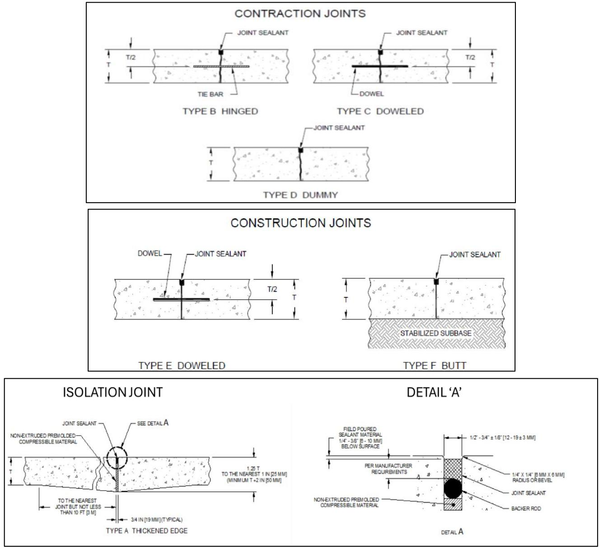
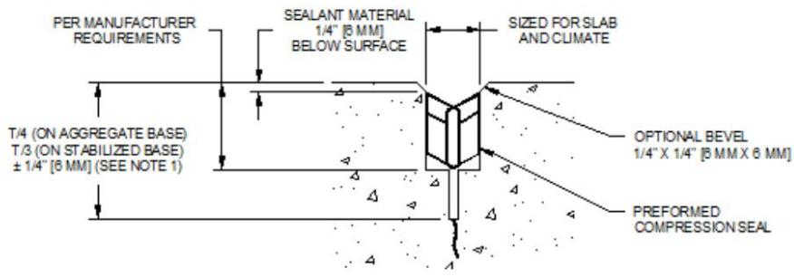

Joint Sealing
Joint sealing is the practice of placing a flexible, compressible material into concrete pavement or construction joints to create a watertight barrier that excludes water, gases, and solid debris while accommodating limited structural movement. This process preserves slab continuity by allowing the material to expand and contract with temperature changes and traffic loads, thereby preventing moisture-related distresses such as pumping, faulting, freeze-thaw damage, and chemical degradation of the cement paste [1] [2]. The procedure involves preparing a recessed reservoir by cleaning the joint cavity and inserting a compressible backer to control sealant depth and prevent bonding to the bottom of the joint before applying the sealant in either liquid or preformed configurations [2] [3]. Sealants are selected based on their flow characteristics and application methods, such as non-sag products requiring tooling or self-leveling formulations, to ensure they effectively block environmental ingress while maintaining the integrity of the pavement structure over its service life [1] [2].
Joint Sealing unifies a set of practices dedicated to protecting pavement structures from environmental damage through physical barriers and ongoing care. Sealant Installation executes the critical application of flexible barriers to joints, directly fulfilling the joint sealing mandate by preventing water and debris ingress while accommodating structural movements. Sealant Performance evaluates how effectively sealants resist environmental degradation and maintain joint integrity over time to ensure the long-term durability of concrete pavements. Joint Maintenance sustains the efficacy of joint sealing by systematically inspecting and resealing pavement joints to preserve structural integrity. Pavement Maintenance extends the effectiveness of joint sealing by stabilizing concrete slabs and preserving joint integrity to prevent structural degradation in existing roadways.
Sources (3)
Sub-concepts (4)
Key findings
- Identified meticulous reservoir preparation—including water washing, abrasive blasting, and oil-free air blowing—as the decisive factor for adhesion, noting that inadequate cleaning consistently leads to premature sealant failure [2] [3].
- Demonstrated a clear life-cycle trade-off where hot-applied asphalt products offer lower upfront costs but shorter service lives (approximately ten years), whereas cold-applied silicone systems incur higher initial expenses yet provide longer effective protection (exceeding twenty years) [1].
- Established that reliable joint sealing requires a disciplined quality control sequence involving specific saw-cut dimensions, proper backer rod installation verified by tactile or wipe tests, and adherence to manufacturer-specific curing and temperature guidelines [3].
- Revealed that joint geometry significantly influences performance, with narrow, single-cut transverse joints recommended to minimize movement and stress concentrations while ensuring sufficient reservoir volume for the sealant [1].
- Observed that appropriate shape factors and compression limits are critical for different sealant types, with liquid sealants relying on long-term adhesion and preformed compression seals depending on lateral rebound characteristics [2].
- Found that installation quality dominates long-term outcomes, as proper sidewall cleaning, correct backer-rod selection, and adherence to suitable shape factors reduce internal stresses and prevent premature extrusion [1].
- Reported that comprehensive maintenance programs must address longitudinal and shoulder joints in addition to transverse joints, as these often contribute disproportionately to water ingress despite receiving less sealing attention [1].
- Showed that seasonal timing affects sealant performance, with resealing conducted during spring or fall under moderate temperatures yielding the most reliable cure compared to extreme weather conditions [1].
Joint Sealing Strategy and Quality Assurance
Evidence: 3 reports (3 primary)
Joint sealing strategy involves the systematic application of flexible barriers to concrete pavement joints to exclude water, gases, and debris while accommodating structural movements induced by temperature changes and traffic loads [2]. Effective quality assurance requires precise joint preparation, including the creation of a properly sized reservoir through saw cutting and the installation of compressible backer materials to control sealant depth and prevent bottom adhesion [3]. The selection of appropriate sealant materials and application techniques must align with specific joint geometries, exposure conditions, and performance requirements to ensure long-term durability and slab integrity [2].
The following figure illustrates typical joint configurations employed in airport concrete pavements.

Joint details used in airport concrete pavements (FAA 2021). [3]The figure displays cross-sectional diagrams of various joint types, including contraction, construction, and isolation joints. Isolation Joints are special joints designed to separate the pavement being constructed from adjacent pavements, embedded items, or other slab penetrations. The diagrams illustrate how joint sealant is placed within the concrete structure to create a watertight barrier.
Research problem — Research must address how to prevent the uncontrolled infiltration of water, de-icing chemicals, and debris through compromised joints, which leads to subgrade erosion, pumping, and structural deterioration [1] [2]. Investigation is needed into the critical impact of timing delays in sealant placement relative to concrete strength development, as well as the consequences of inadequate joint cleaning on sealant adhesion and long-term integrity [3].
The following figure illustrates the structural deterioration resulting from these issues.
 Examples of joint sealant failures: missing and debonded sealant (left) and incompressible materials in joint (right) [1]
Examples of joint sealant failures: missing and debonded sealant (left) and incompressible materials in joint (right) [1]
The figure displays two examples of concrete pavement joints exhibiting distress, specifically showing a wide gap with no visible material on the left and a filled crack containing debris on the right. These images illustrate specific failure modes such as missing sealant and incompressible materials, which are critical to understanding joint maintenance and performance.
State of the art — Joint sealing is currently established as a preventative preservation strategy that protects subgrade strength by blocking water and incompressible debris, with material selection driven by climate, joint geometry, and the trade-off between durability and flexibility [1] [2]. State-of-the-art quality assurance emphasizes that meticulous reservoir preparation, verified through rigorous cleaning standards like the ACPA wipe test, is a more critical determinant of long-term adhesion than material choice alone [2] [3]. Modern practice integrates data-driven decision making using sensors to optimize sawing and sealing timing, while managing the schedule-durability trade-off through prescribed protective measures when immediate sealing is not feasible [1] [3].
Findings from the reports
- Found that meticulous joint-reservoir preparation—including water washing, abrasive blasting, and oil-free air blowing—is the decisive factor for long-term adhesion, as inadequate cleaning consistently leads to premature failure [2].
- Showed that sealant selection involves a clear life-cycle trade-off where hot-applied asphalt products offer lower upfront costs but shorter service lives compared to cold-applied silicone systems that provide longer-term protection despite higher initial expenses [1].
- Observed that simplified joint geometry, specifically narrow single-cut transverse joints with depths of at least one-third slab thickness, minimizes movement and stress concentrations to enhance sealant performance [1].
- Reported that comprehensive maintenance programs must address longitudinal and shoulder joints in addition to transverse joints, as these other joint types can contribute a disproportionate share of water ingress [1].
- Found that seasonal timing significantly impacts outcomes, with resealing performed during spring or fall under moderate temperatures yielding more reliable cure results than other periods [1].
- Demonstrated that reliable joint sealing requires a disciplined quality control sequence, including making a second saw cut to form a proper reservoir with blades sized for specific width and bevel requirements [3].
Novelty & rigor — The research introduces a deterministic joint-sealing strategy that replaces generic preparation with engineered workflow innovations, including real-time concrete condition monitoring via embedded sensors and maturity meters to precisely define the optimal sawing window [3]. Methodological rigor is enhanced by mandating a two-cut reservoir creation process using high-horsepower wet-diamond equipment, coupled with multi-step cleaning and standardized wipe tests to ensure consistent adhesion and contamination control [1] [3]. This approach shifts the field toward tool-driven sealing strategies that balance structural performance with rapid traffic restoration, addressing cross-cutting challenges of timing precision and durability that isolated sub-concepts do not capture [1].
Reported values
| Parameter | Value | Context | Source |
|---|---|---|---|
| cleaning cost proportion | less than 10% | of total installation expense | [1] |
| crack width for sealing | 0.12 in. | cracks less than this width are generally not sealed | [1] |
| crack width for sealing | 0.25 to 0.5 in. | cracks sealed by many agencies | [1] |
| crack width for sealing | 0.5 in. | cracks up to this width or more (with minimal spalling/faulting) | [1] |
| joint widening limit | no more than 0.08 in. | total joint widening during refacing operation | [1] |
| joint width | around 0.25 in. | concrete-to-concrete longitudinal joints | [1] |
| placement temperature limit | below 40°F | silicone sealants should not be placed at temperatures | [1] |
| sealant failure threshold for resealing | 25% to 50% | joint sealant length failed | [1] |
| service life | 10 years | primarily silicone sealants (average) | [1] |
| service life | 12 and 16 years | several silicone sealants (performance range) | [1] |
| service life | more than 20 years | silicone and hot-applied sealants | [1] |
| shape factor | 2 | low-modulus silicone sealants | [1] |
| strain tolerance | 25% to 35% | hot-applied sealants (strains of original width) | [1] |
| strain tolerance | 50% to 100% | silicone sealants (tolerate strains) | [1] |
| saw horsepower | 65 horsepower | cutting hardened concrete | [3] |
3 more distinct values omitted here; the full span-verified set is in the quantities sidecar.
Across the reviewed reports, joint sealing strategy converges on meticulous reservoir preparation as the decisive factor for long-term performance, with all studies emphasizing that inadequate cleaning—whether through water washing, abrasive blasting, or high-flow air—is a primary cause of premature adhesion failure. While specific material choices involve trade-offs between upfront cost and service life, the reports collectively establish that installation quality, including precise geometry control and proper backer rod sizing, dominates long-term outcomes more than the inherent properties of the sealant itself. Quality assurance protocols are further unified by the requirement for rigorous execution standards, such as specific cleaning sequences and tactile verification of backer rod placement, which are shown to produce consistent results even when not explicitly mandated by broader regulatory specifications. [1] [2] [3]
The following figure illustrates how variations in sealant depth directly influence internal stresses within the joint.
 Schematic of joint sealant reservoir [1]
Schematic of joint sealant reservoir [1]
The figure displays a cross-sectional view of a concrete pavement joint containing a black compressible backer rod and a layer of sealant material. Key geometric parameters are labeled, including the joint width (W), the recess depth below the surface, and the sealant depth (D).
Implications — Joint sealing must be treated as a system-wide, performance-driven activity where design standards codify specific joint geometry to create adequate reservoirs and prohibit protruding sealant, ensuring durability relies on shape rather than material chemistry [1]. Success hinges on rigorous quality assurance protocols that mandate precise equipment specifications, specialized cleaning methods like abrasive blasting, and strict adherence to preparation steps, as inadequate execution inevitably leads to premature failure regardless of the sealant type selected [2] [3]. Agencies should prioritize resealing based on performance thresholds indicating loss of water-blocking function rather than fixed timetables, while balancing upfront investments in disciplined preparation against life-cycle economics to optimize total ownership costs [1] [2].
The following figure illustrates a preformed seal detail to demonstrate proper joint geometry and sealant placement as required by design standards.

the figure.64: Concrete pavement joint sealant details (FAA 2021). [3]The figure displays a cross-sectional detail of a concrete pavement joint utilizing a preformed compression seal. It specifies that the reservoir is sized for slab and climate conditions, with an optional bevel on the edges to facilitate installation.
Limitations — The effectiveness of joint sealing relies heavily on engineering judgment and proper preparation rather than extensive long-term performance data, leaving current practices grounded in limited experience [2]. Visual inspection alone is insufficient for assessing sealant reliability because water infiltration depends on complex factors such as bonding conditions, joint geometry, and material type rather than mere presence [1]. Quality assurance procedures often lack mandatory regulatory requirements, relying instead on voluntary adoption and specific equipment availability that may not be accessible in all operational contexts [3].
Related concepts
In this hierarchy
- Child: Joint Maintenance
- Child: Sealant Installation
- Child: Pavement Maintenance
- Child: Sealant Performance
Related by shared evidence
- Aggregate Management — shares 4 reports
- Cement Chemistry — shares 4 reports
- Cementitious Materials — shares 4 reports
- Concrete Mixture Design — shares 4 reports
- Concrete Production — shares 4 reports
- Concrete Testing — shares 4 reports
- Cracking Mitigation — shares 4 reports
- Joint Maintenance — shares 4 reports
Similar topics
- Joint Maintenance
- Cracking Mitigation
- Sealant Performance
- Pavement Repair
- Pavement Maintenance
- Concrete Cracking
- Pavement Management
- Pavement Management
References
- Concrete Pavement Preservation Guide (Third Edition) (2022)
- Integrated Materials and Construction Practices for Concrete Pavement: A STATE-OF-THE-PRACTICE MANUAL (2019)
- Best Practices Manual: Quality Control and Quality Acceptance of Concrete Airport Pavement (2025)
Feedback on this page